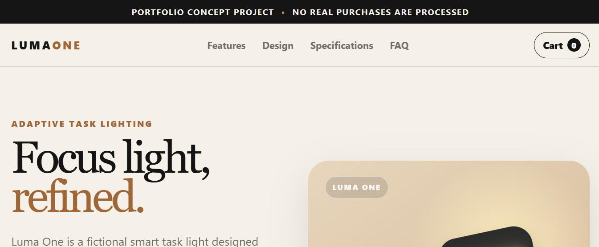
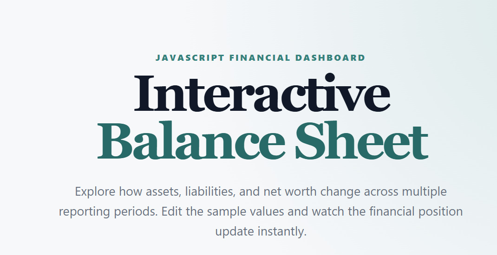
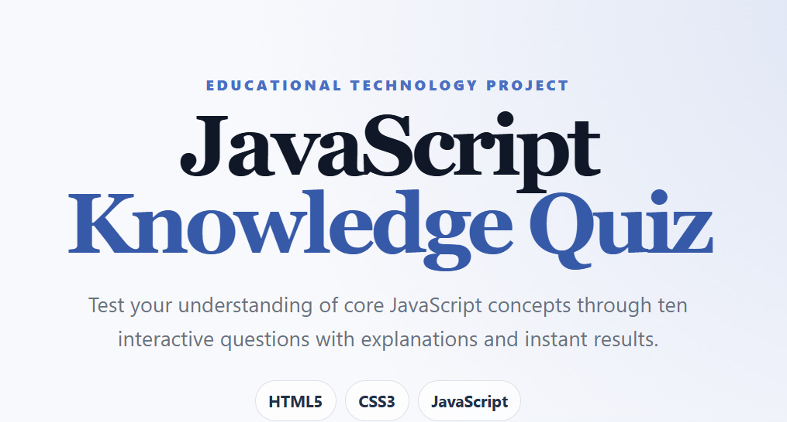
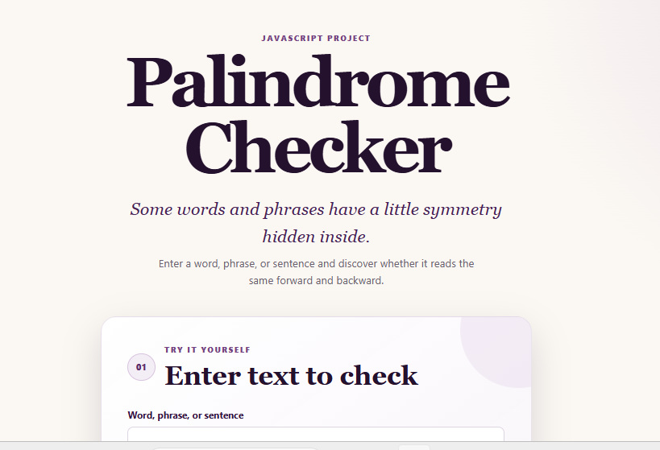

Build
Responsive interfaces and interactive JavaScript experiences that are practical, usable, and accessible.
S.T.E.M. EDUCATION · TECHNOLOGY · DEVELOPMENT
S.T.E.M. Educator Technology Professional
I combine software development, educational technology, IT, cybersecurity, and technical communication to solve problems, empower learners, and create practical digital experiences.
Responsive interfaces and interactive JavaScript experiences that are practical, usable, and accessible.
Explain technical concepts through structured, learner-centered experiences that make complex ideas easier to understand.
Approach technology problems systematically, isolate the issue, test solutions, and move from problem to working result.
SELECTED WORK
Selected front-end and JavaScript projects rebuilt, tested, documented, and deployed as working web applications.

01FRONT-END · JAVASCRIPT · E-COMMERCE UI
Interactive Product Landing Page
A fictional e-commerce experience featuring product finish customization, quantity controls, client-side cart state, responsive navigation, FAQ interactions, and an original CSS-generated product illustration.

02JAVASCRIPT · FINANCIAL DASHBOARD
An editable financial dashboard with year-based state, automatic assets and liabilities calculations, net-worth analysis, debt-to-assets reporting, reset functionality, and print support.

03EDUCATIONAL TECHNOLOGY · JAVASCRIPT
A ten-question instructional application with progress tracking, immediate feedback, explanations, final scoring, answer review, keyboard support, and retake functionality.

04JAVASCRIPT · TEXT PROCESSING
An accessible text-processing application that evaluates phrases while ignoring case, punctuation, and spacing.
PROFESSIONAL PROFILE
I work at the intersection of technology, education, technical support, and digital problem-solving.
My background in information technology and security, S.T.E.M. education, technical support, and software projects shapes the way I approach technology: understand the problem, communicate clearly, build thoughtfully, test the result, and improve what can be improved.
I am especially effective in environments where technology must not only work, but also make sense to the people using it.
Clear technology is not only about code. It is also about understanding people, problems, systems, and outcomes.
SELECTED EXPERIENCE
A professional background spanning education, technical support, SaaS environments, and technology-driven problem-solving.
Edmentum
Deliver targeted, curriculum-aligned remote instruction and learning support while using assessment data and student performance to guide instruction.
HHAeXchange
Supported users in a SaaS environment through technical troubleshooting, issue resolution, platform guidance, and customer-facing communication.
Telecommunications & Technology
Built foundational experience diagnosing technical issues, supporting customers, explaining technology clearly, and moving problems toward resolution.
TECHNICAL TOOLKIT
React · TypeScript · AI-powered applications
BEYOND THE RÉSUMÉ
A few questions that provide additional context about my professional approach, problem-solving, and use of technology.
I am a technology professional and S.T.E.M. educator with a background in information technology, security, technical support, digital learning, and software projects. What connects those areas for me is problem-solving: I enjoy understanding how something works, identifying what needs to improve, and communicating the solution in a way people can actually use.
I bring a combination of technical problem-solving, communication, teaching, and user awareness. I can work through a technical issue while also thinking about the person who has to understand, support, or use the final solution. That combination is especially useful in collaborative, customer-facing, educational, and cross-functional technology environments.
I start by defining the problem clearly and separating what I know from what I still need to determine. I reproduce or isolate the issue when possible, research deliberately, test one change at a time, validate the result, and document what worked. I am comfortable learning while solving rather than assuming I must already know every answer.
I use AI as an accelerator for research, brainstorming, development, debugging, documentation, and exploring alternative solutions. I still review the output, test the implementation, verify important information, and make the final decisions. I view AI as a powerful tool within a responsible human-led workflow—not as a substitute for understanding or accountability.
Teaching strengthens my ability to break complex ideas into understandable steps, recognize when a user or learner is stuck, communicate with different audiences, and evaluate whether an explanation actually worked. Those same skills transfer directly into technical support, documentation, interface design, training, and collaborative software work.
I am interested in technology opportunities where development, technical problem-solving, communication, and continuous learning are valued. I am particularly interested in work involving front-end development, educational technology, technical training, IT, or roles where technology must be translated into practical outcomes for real users.
EDUCATION & CREDENTIALS
Information Technology & Security
University of PhoenixElementary Education and Teaching
Certificate of Eligibility
Grades 9–12Statement of Eligibility
K–12LET'S CONNECT
Explore my work, connect with me professionally, or review the source code behind the projects in this portfolio.